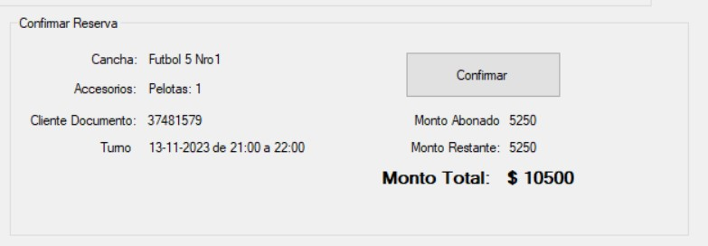
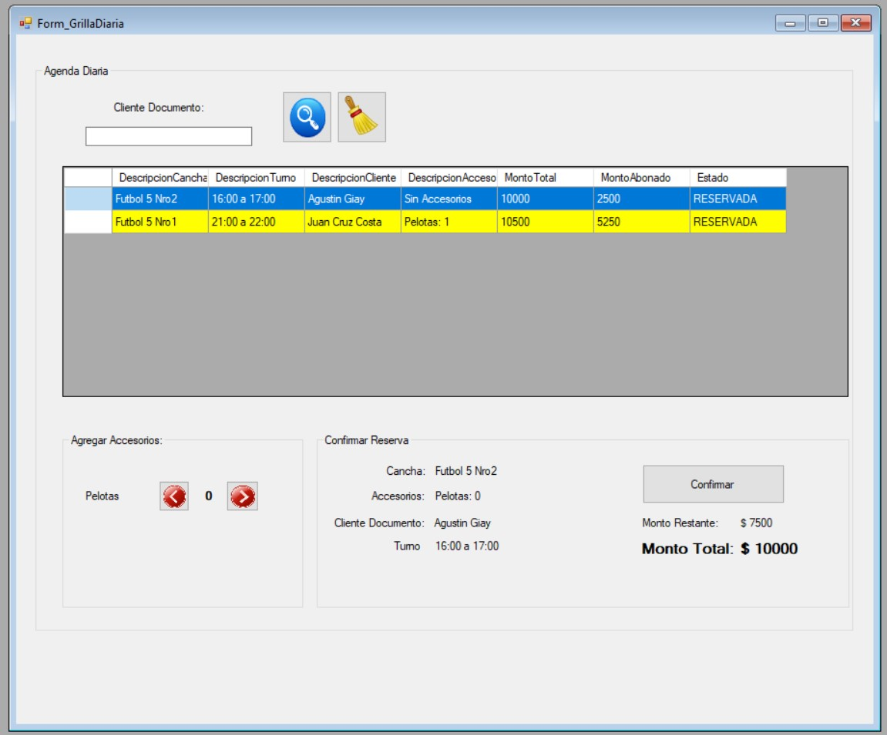
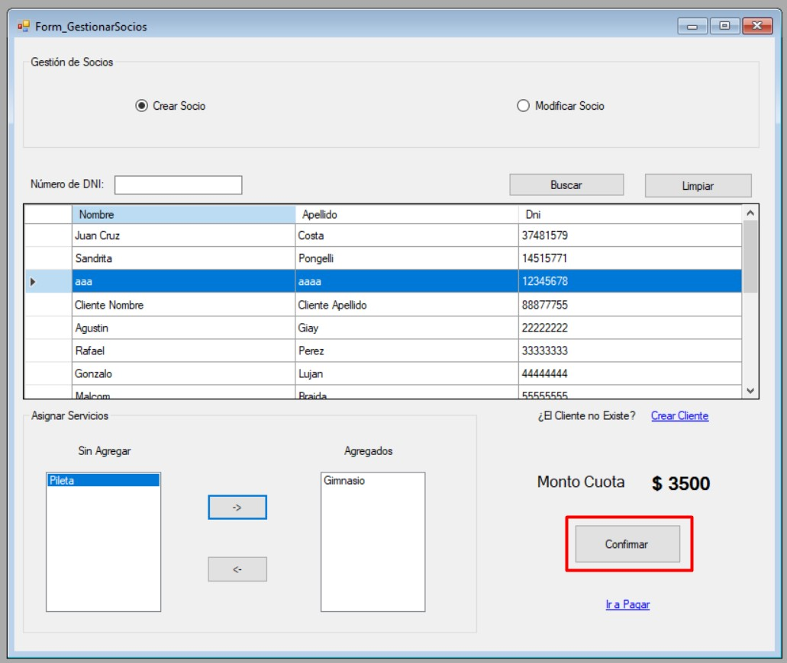
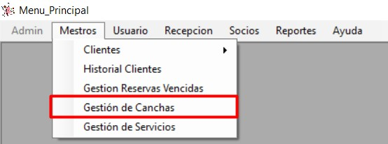
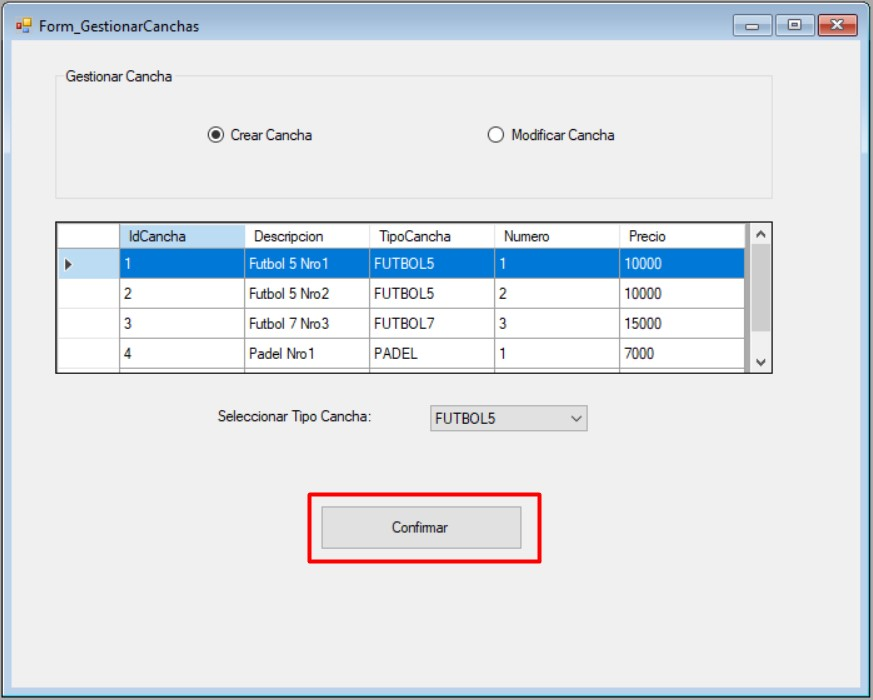
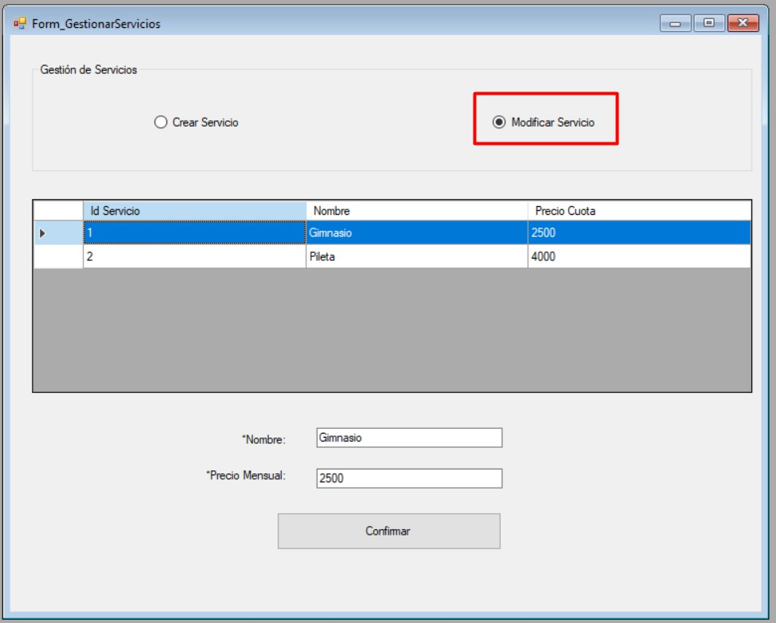
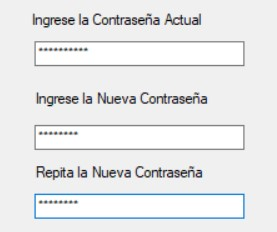
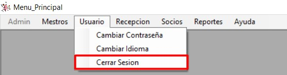

Acceso al Sistema
Para acceder al sistema es necesario tener registrado un usuario activo.
Deberá ingresar su usuario y contraseña para acceder al sistema.

Listo, se ha iniciado sesion.

Gestionar Reservas
Esta opción nos permitirá Generar y modificar Reservas.
En el menu "Recepción", haga click sobre "Generar Reserva"
Se desplegará la siguiente ventana con dos opciones principales: Generar Reserva y Modificar Reserva

Generar Reserva

Para Generar una Reserva debemos completar los siguientes campos:
- Seleccionar Cancha - Obligatorio

- Agregar Accesorios - Opcional
- Ingresar Cliente - Obligatorio
- - Para buscar un cliente se debe ingresar el Número de Documento y pulsar la Lupa

- - Si el cliente no existe lo puede dar de alta seleccionando "Crear Cliente"

- Seleccionar Turno - Obligatorio
- - Para seleccionar un turno solo basta por pulsarlo o bien se puede realizar la búsqueda por fecha

- - Para buscar se debe seleccionar la fecha deseada en el calendario y pulsar la Lupa
- - Para borrar los datos de búsqueda se debe pulsar la Escobilla

- Confirmar Pago - Obligatorio
- - Para poder confirmar la reserva se debe confirmar el pago


Previo a la confirmación se podrán visualizar los datos ingresados y cargados:
Finalmente se podrá ver el mensaje de reserva efectuada correctamente:
Modificar Reserva

Para Modificar una Reserva debemos completar los siguientes campos:
- Ingresar N° Documento Cliente - Obligatorio

- Agregar o Quitar Accesorios - Opcional
- Seleccionar la reserva a modificar o cancelar - Obligatorio
- Modificar o Cancelar Reserva - Obligatorio

- - Si selecciona Modificar Reserva se almacenaran los cambios realizados sobre la reserva seleccionada
- - Si selecciona Cancelar Reserva se cancelará la reserva seleccionada
- 
Finalmente una vez completado los campos podremos Confirmar la operación
Visualizaremos el mensaje de operación realizada con éxito
Gestionar Agenda Diaria
Esta opción nos permitirá Confirmar y Habilitar una cancha reservada, generando su respectivo Alquiler.
En el menu "Recepción", haga click sobre "Agenda Diaria"

Se desplegará la siguiente ventana con las reservas efectuadas para el día de la fecha
Para Confirmar un Alquiler debemos seguir las siguientes instrucciones:
- Seleccionar una reserva - Obligatorio
- - Se puede realiar la búsqueda de reservas ingresando N° Documento de Cliente y seleccionando la Lupa
- - Para borrar los criterios de búsqueda se debe pulsar la Escobilla

- Agregar o Quitar Accesorios - Opcional
- Confirmar Operación

- Modificar o Cancelar Reserva - Obligatorio
- - Si selecciona Modificar Reserva se almacenaran los cambios realizados sobre la reserva seleccionada
- - Si selecciona Cancelar Reserva se cancelará la reserva seleccionada
Finalmente veremos el mensaje de éxito de la operación realizada y el cambio del estado en la reserva

Gestionar Socios
Esta opción nos permitirá Asociar y Modificar condiciones de Socio de los Clientes.
En el menu "Socios", haga click sobre "Gestión de Socios"

Se desplegará la siguiente ventana con dos opciones principales: Crear Socio y Modificar Socio

Crear Socio

Para Crear un Socio debemos seguir las siguientes instrucciones:
- Seleccionar un Cliente - Obligatorio
- - Si el cliente no existe lo puede dar de alta seleccionando "Crear Cliente"
- - Se puede realiar la búsqueda de Cliente ingresando N° Documento de Cliente y seleccionando "Buscar"
- - Para borrar los criterios de búsqueda se debe seleccionar "Limpiar"

- Asignar Servicios - Opcional
- - Para asignar un servicio, debemos seleccionar el servicio de la columna izquierda y presionar el boton con la flecha "->"
- - Para desasignar un servicio, debemos seleccionar el servicio de la columna derecha y presionar el boton con la flecha "<-"

- Confirmar Operación
- 
Finalmente veremos el mensaje de éxito de la operación realizada y la creación del socio (que aún no se encuentra activo)

Para que el socio se encuentre en estado activo debe pagar la cuota, esto se puede realizar pulsando "Ir a Pagar"

Modificar Socio
Para Modificar un Socio debemos seguir las siguientes instrucciones:
- Seleccionar un Socio - Obligatorio
- - Si el Socio no existe lo puede dar de alta seleccionando Crear Socio
- - Se puede realiar la búsqueda de Socio ingresando N° Documento o N° de Socio y seleccionando "Buscar"
- - Para borrar los criterios de búsqueda se debe seleccionar "Limpiar"
- Asignar Servicios - Opcional
- - Para asignar un servicio, debemos seleccionar el servicio de la columna izquierda y presionar el boton con la flecha "->"
- - Para desasignar un servicio, debemos seleccionar el servicio de la columna derecha y presionar el boton con la flecha "<-"
- Confirmar Operación

Finalmente veremos el mensaje de éxito de la operación realizada y la modificación del socio
Para que el socio se encuentre en estado activo debe pagar la cuota, esto se puede realizar pulsando "Ir a Pagar"
Gestionar Pagos
Esta opción nos permitirá registrar los pagos de cuota de los Socios
En el menu "Socios", haga click sobre "Gestión de Pagos"

Se desplegará la siguiente ventana con la información necesaria para registrar el pago de cuota

Para Confirmar un Pago de Cuota debemos seguir las siguientes instrucciones:
- Seleccionar un Socio - Obligatorio
- - Se puede realiar la búsqueda de Socio ingresando N° Documento o N° de Socio y seleccionando "Buscar"
- - Para borrar los criterios de búsqueda se debe seleccionar "Limpiar"
- Servicios Contratados - Solo lectura, Información

- Tipo Cuota - Obligatorio
- - La cuota mensual actualiza el precio de socio y/o servicios contratados por un mes a partir de la fecha actual
- - La cuota anual actualiza el precio de socio y/o servicios contratados por un año a partir de la fecha actual
- - Si el socio se encuentra activo se extenderá su cuota en base a la fecha actual y si existen diferencias de servicios debera abonarlas en el momento

- Confirmación de Pago - Obligatorio
- Confirmar Operación

Finalmente veremos el mensaje de éxito de la operación realizada y el pago realizado correctamente.
Si el socio desea modificar sus servicios actuales podremos seleccionar la opción "Modificar Servicios Socios" que nos lleva a "Gestionar Socios" (visto anteriormente)

Gestionar Clientes
Esta opción nos permitirá Crear y Modificar Clientes.
En el menu "Maestros", haga click sobre "Clientes", "Gestionar Clientes"
Se desplegará la siguiente ventana con dos opciones principales: Crear Cliente y Modificar Cliente
Crear Cliente

Para Crear un Cliente debemos seguir las siguientes instrucciones:
- Ingresar los datos solicitados
- - Número de Documento (Obligatorio)
- - Nombre (Obligatorio)
- - Apellido (Obligatorio)
- - Teléfono (Obligatorio)
- - Teléfono Alternativo (Opcional)
- - Email (Obligatorio)

- Confirmar Operación
Finalmente veremos el mensaje de éxito de la operación realizada y la creación del Cliente
Modificar Cliente

Para Modificar un Cliente debemos seguir las siguientes instrucciones:
- Seleccionar un Cliente - Obligatorio
- - Si el cliente no existe lo puede dar de alta seleccionando "Crear Cliente"
- - Se puede realiar la búsqueda de Cliente ingresando N° Documento de Cliente y seleccionando "Buscar"
- - Para borrar los criterios de búsqueda se debe seleccionar "Limpiar"
- Los datos disponibles para modificar son los siguientes:
- - Número de Documento
- - Nombre
- - Apellido
- - Teléfono
- - Teléfono Alternativo

- Confirmar Operación
Finalmente veremos el mensaje de éxito de la operación realizada y la modificación del Cliente
Gestionar Canchas
Esta opción nos permitirá Crear y Modificar Canchas.
En el menu "Maestros", haga click sobre "Gestion de Canchas"
Se desplegará la siguiente ventana con dos opciones principales: Crear Cancha y Modificar Cancha
Crear Cancha
Para Crear una Cancha debemos seguir las siguientes instrucciones:
- Seleccionar tipo de cancha
- Confirmar Operación
- 
Finalmente veremos el mensaje de éxito de la operación realizada y la creación de la Cancha
Modificar Cancha
Para Crear una Cancha debemos seguir las siguientes instrucciones:
- Seleccionar tipo de cancha
- Ingresar nuevo precio
- Confirmar Operación
Finalmente veremos el mensaje de éxito de la operación realizada y la modificación de la Cancha
Gestionar Servicios
Esta opción nos permitirá Crear y Modificar Servicios.
En el menu "Maestros", haga click sobre "Gestion de Servicios"
Se desplegará la siguiente ventana con dos opciones principales: Crear Servicio y Modificar Servicio
Crear Servicio
Para Crear un Servicio debemos ingresar los siguientes datos:
- - Nombre del Servicio - Obligatorio
- - Precio Mensual - Obligatorio
- Confirmar Operación
Finalmente veremos el mensaje de éxito de la operación realizada y la creación del Servicio
Modificar Servicio
Para Modificar un servicio debemos seguir las siguientes instrucciones:
- Seleccionar servicio:
- Modificar los datos deseados:
- - Nombre del Servicio
- - Precio Mensual
- Confirmar Operación
Finalmente veremos el mensaje de éxito de la operación realizada y la creación del Servicio
Cambiar Contraseña
Esta funcionalidad permite cambiar la contraseña del usuario logueado, para ello digirase a la opción "Cambiar Contraseña", del menú "Usuario"
Se desplegará la siguiente ventana con los datos necesarios a igresar para el cambio correcto de la contraseña.

Para cambiar la contraseña debemos ingresar los siguientes datos:
- - Contraseña Actual
- - Nueva Contraseña
- - Repetir la Nueva Contraseña (debe coincidir con la ingresada en el paso anterior)
- 
- Confirmar Operación
Finalmente veremos el mensaje de éxito de la operación realizada y la creación del Servicio
Cambiar Idioma
Esta funcionalidad permite cambiar el idioma del sistema, para ello digirase a la opción "Cambiar Idioma", del menú "Usuario" o bien si se encuentra en la pantalla de Login la opción "Cambiar Idioma"
- Desde Login
- Desde Menu Principal
- Además podra marcar como predeterminado el idioma seleccionado si así lo desea
Se abrirá una ventana con los idiomas disponibles, seleccione el idioma deseado de los disponibles en el sistema y luego haga click en "Confirmar".
Listo, verá como la interfaz cambia al idioma seleccionado.
Cerrar Sesión
Esta funcionalidad permite cerrar su sesión en sistema, para ello digirase a la opción "Cerrar Sesión", del menú "Usuario"
Se abrirá una ventana donde se va a consultar si esta seguro que desea cerrar sesión.